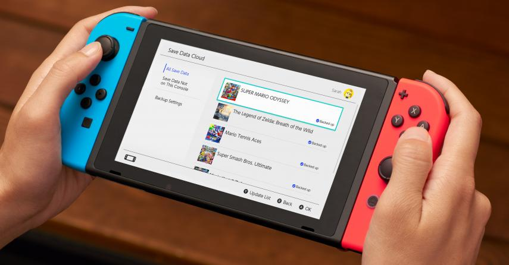

La llegada de las nuevas consolas, PS5 y Xbox Series X a finales de año no supone el fin de la generación actual. Estas son las armas con las que cuentan, y contarán, PS4, Nintendo Switch y Xbox One para mantenerse en el mercado junto a las nuevas máquinas más potentes.
Los últimos meses de 2020, con el lanzamiento de las nuevas consolas, PS5 y Xbox Series X, van a ser apasionantes para cualquier aficionado a los videojuegos. Como en anteriores cambios de generación, nos espera un periodo de coexistencia, en que muchos usuarios tendrán que decidirse entre "dar el salto" o aprovechar las máquinas actuales, con un catálogo más nutrido y otras ventajas.
Durante el evento de presentación de PlayStation 5 se ha desvelado un nuevo tráiler de Oddworld: Soulstorm, el nuevo juego de Oddworld Inhabitants para PS4, PS5 y PC (en este último caso, a través de la tienda de Epic Games). Anunciado en 2016, Oddworld: Soulstorm es una reimaginación de Abe's Exodus, el segundo juego de esta saga de plataformas y puzles para PlayStation y PC tras el genial Abe's Oddysee. Os dejamos con el nuevo tráiler de Oddworld: Soulstorm
Un nuevo y poderoso fusil de asalto ha llegado a Call of Duty Warzone con motivo de la Temporada 4. Hablamos de una vieja conocida, la GALIL. Este arma, equipada con unos buenas accesorios y acompañada con un equipo y unas ventajas adecuadas, puede hacerte ganar muchas partidas
Con el objetivo de mejorar la precisión y el alcance de este arma debemos equipar la Galil con una bocacha compensador, un cañón XRK Zodiac S440, una empuñadura delantera a elegir, un cargador de 45 balas y la empuñadura trasera personalizada XRK CR-56 Engomada. Si bien es cierto que la movilidad se reduce, esta bajada es muy pequeña en comparación con el aumento que se produce en el resto de estadísticas.